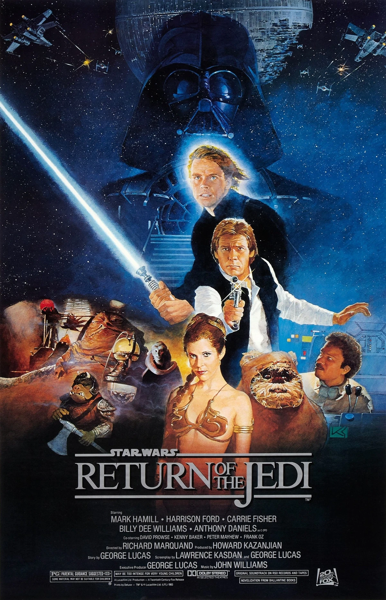

Jonas Taylor lidera un equipo de investigación en las profundidades del océano. Acorralados por colosales tiburones prehistóricos y despiadados bandidos, los científicos intentan sobrevivir a toda costa.
Jake Sully y Ney'tiri han formado una familia y hacen todo lo posible por permanecer juntos. Sin embargo, deben abandonar su hogar y explorar las regiones de Pandora cuando una antigua amenaza reaparece.
Top películas hoy

Seis meses después de que Han Solo fuera capturado y congelado en carbonita en la Ciudad de las Nubes, el Imperio Galáctico está construyendo una nueva Estrella de la Muerte. Mientras tanto, el joven Luke lucha para alcanzar la maestría jedi.

El Dr. Godwin resucita a la joven Bella Baxter para que aprenda a su lado. Sin embargo, ella huye en compañía de un abogado en una aventura relámpago a través de los continentes. Libre de los prejuicios de su época, se mantiene firme en su propósito de defender la igualdad y la liberación.

El adolescente Marty McFly es amigo de Doc, un científico que ha construido una máquina del tiempo. Cuando los dos prueban el artefacto, un error fortuito hace que Marty llegue a 1955, año en el que sus padres iban al instituto y todavía no se habían conocido. Después de impedir su primer encuentro, Marty deberá conseguir que se conozcan y se enamoren, de lo contrario su existencia no sería posible.

Un fontanero llamado Mario viaja por un laberinto subterráneo con su hermano, Luigi, intentando salvar a una princesa capturada.